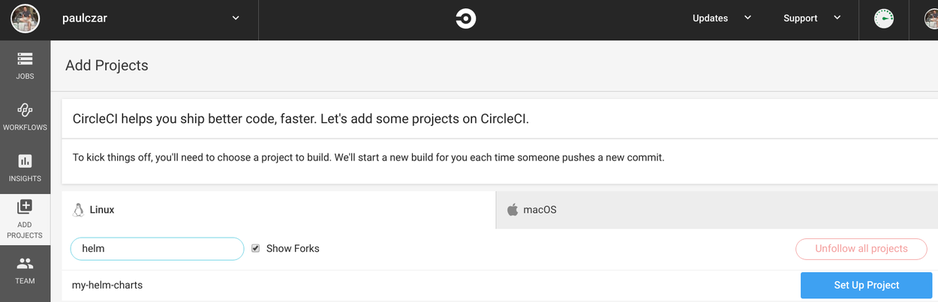
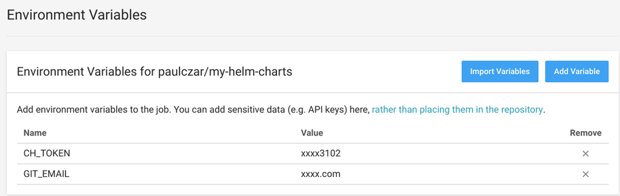
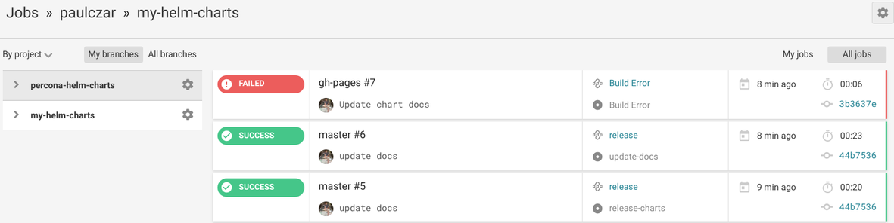

Creating a Helm Chart Repository - Part 2
July 3, 2019
Introduction
Welcome to a three part blog series on Creating a Helm Chart Repository. In part 1 of this series I demonstrated creating a Helm chart repository using GitHub and GitHub Pages. In this part 2 I will add Automation to automatically update the repository, and in part 2 I will add testing for changes to the charts themselves.
If you’re into Videos, I walked JJ through starting with Helm from scratch all the way to creating a Helm Repo and CI/CD.
Use Circle CI to automate Helm Chart Updates
Note: While I would usually use Concourse CI for my CI workflows, I wanted to only use managed services and I chose Circle as that is already commonly used in the Helm community. It would be trivial to whip up a Concourse Pipeline to do the same thing.
Now that we’ve successfully created a Helm Chart Repostiory using GitHub and GitHub pages we can move on to adding some Automation so that our Chart Repository is updated any time we push changes up to our master branch.
Its pretty easy to create a new Circle CI account. You simply go to their website and hit sign-up, it will ask you to log using GitHubOauth2 and once you’ve given it access to your repositories you are good to go.
Once logged in you need to hit the ADD Projects menu item and hit the set up project button next to my-helm-charts.

You can leave the defaults and just go down and click the Start Building button.
It will attempt to run and fail because you don’t have a .circleci/config.yml file in your repo yet. We’ll create that soon.
Before we do that though we need to create a private key for Circle CI with write access to our project. Hit the settings button on the top right of the Workflows -> username -> my-helm-charts screen tat looks like a little cog.
From here you want to hit SSH permissions and hit Checkout SSH Keys.
There should be a Add user key section with a button that says Authorize with GitHub, hit that button. To be extra certain it loads the same page and you need to click the Create and add [username] user key which will create a key and pass the public key off to github.
On that same settings page you need to add some environment variables:

Now its time to set up our Automation.
Create Circle CI config for uploading new packages
Create a new directory .circleci and a file inside that called config.yml:
$ mkdir .circleci
$ touch .circleci/config.yml
Write out the config.yml file like so:
Note: this CircleCI config file creates two jobs, One to lint the shell scripts we’re about to create, the other to release charts and copy documentation into our Helm repo website. These tasks will run when code is pushed or merged into the
masterbranch.
.circleci/config.yml
version: 2
jobs:
lint-scripts:
docker:
- image: koalaman/shellcheck-alpine
steps:
- checkout
- run:
name: lint
command: shellcheck -x .circleci/*.sh
release-charts:
machine: true
steps:
- checkout
- run:
command: |
echo "export GIT_REPOSITORY_URL=$CIRCLE_REPOSITORY_URL" >> $BASH_ENV
echo "export GIT_USERNAME=$CIRCLE_PROJECT_USERNAME" >> $BASH_ENV
echo "export GIT_REPOSITORY_NAME=$CIRCLE_PROJECT_REPONAME" >> $BASH_ENV
.circleci/install_tools.sh
.circleci/release.sh
workflows:
version: 2
release:
jobs:
- lint-scripts
- release-charts:
filters:
tags:
ignore: /.*/
branches:
only: master
We referenced two scripts in the config.yml file, so we better create those. These scripts are a mix of ones that I have written, and have borrowed from Reinhard Nägele one of the main contributors to awesome tooling in the Helm Community as found here.
It’s no surprise that these scripts came from Reinhard Nägeleas he is a primary maintainer of both chart-testing and chart-releaser.
.circleci/install_tools.sh
#!/usr/bin/env bash
set -o errexit
readonly HELM_VERSION=2.13.1
readonly CHART_RELEASER_VERSION=0.1.4
echo "Installing Helm..."
curl -LO "https://kubernetes-helm.storage.googleapis.com/helm-v$HELM_VERSION-linux-amd64.tar.gz"
sudo mkdir -p "/usr/local/helm-v$HELM_VERSION"
sudo tar -xzf "helm-v$HELM_VERSION-linux-amd64.tar.gz" -C "/usr/local/helm-v$HELM_VERSION"
sudo ln -s "/usr/local/helm-v$HELM_VERSION/linux-amd64/helm" /usr/local/bin/helm
rm -f "helm-v$HELM_VERSION-linux-amd64.tar.gz"
helm init --client-only
echo "Installing chart-releaser..."
curl -LO "https://github.com/helm/chart-releaser/releases/download/v${CHART_RELEASER_VERSION}/chart-releaser_${CHART_RELEASER_VERSION}_Linux_x86_64.tar.gz"
sudo mkdir -p "/usr/local/chart-releaser-v$CHART_RELEASER_VERSION"
sudo tar -xzf "chart-releaser_${CHART_RELEASER_VERSION}_Linux_x86_64.tar.gz" -C "/usr/local/chart-releaser-v$CHART_RELEASER_VERSION"
sudo ln -s "/usr/local/chart-releaser-v$CHART_RELEASER_VERSION/chart-releaser" /usr/local/bin/chart-releaser
rm -f "chart-releaser_${CHART_RELEASER_VERSION}_Linux_x86_64.tar.gz"
.circleci/release.sh
#!/usr/bin/env bash
set -o errexit
set -o nounset
set -o pipefail
: "${CH_TOKEN:?Environment variable CH_TOKEN must be set}"
: "${GIT_REPOSITORY_URL:?Environment variable GIT_REPO_URL must be set}"
: "${GIT_USERNAME:?Environment variable GIT_USERNAME must be set}"
: "${GIT_EMAIL:?Environment variable GIT_EMAIL must be set}"
: "${GIT_REPOSITORY_NAME:?Environment variable GIT_REPOSITORY_NAME must be set}"
readonly REPO_ROOT="${REPO_ROOT:-$(git rev-parse --show-toplevel)}"
main() {
pushd "$REPO_ROOT" > /dev/null
echo "Fetching tags..."
git fetch --tags
local latest_tag
latest_tag=$(find_latest_tag)
local latest_tag_rev
latest_tag_rev=$(git rev-parse --verify "$latest_tag")
echo "$latest_tag_rev $latest_tag (latest tag)"
local head_rev
head_rev=$(git rev-parse --verify HEAD)
echo "$head_rev HEAD"
if [[ "$latest_tag_rev" == "$head_rev" ]]; then
echo "No code changes. Nothing to release."
exit
fi
rm -rf .deploy
mkdir -p .deploy
echo "Identifying changed charts since tag '$latest_tag'..."
local changed_charts=()
readarray -t changed_charts <<< "$(git diff --find-renames --name-only "$latest_tag_rev" -- charts | cut -d '/' -f 2 | uniq)"
if [[ -n "${changed_charts[*]}" ]]; then
for chart in "${changed_charts[@]}"; do
echo "Packaging chart '$chart'..."
package_chart "charts/$chart"
done
release_charts
sleep 5
update_index
else
echo "Nothing to do. No chart changes detected."
fi
popd > /dev/null
}
find_latest_tag() {
if ! git describe --tags --abbrev=0 2> /dev/null; then
git rev-list --max-parents=0 --first-parent HEAD
fi
}
package_chart() {
local chart="$1"
Helm dependency build "$chart"
Helm package "$chart" --destination .deploy
}
release_charts() {
chart-releaser upload -o "$GIT_USERNAME" -r "$GIT_REPOSITORY_NAME" -p .deploy
}
update_index() {
chart-releaser index -o "$GIT_USERNAME" -r "$GIT_REPOSITORY_NAME" -p .deploy/index.yaml
git config user.email "$GIT_EMAIL"
git config user.name "$GIT_USERNAME"
for file in charts/*/*.md; do
if [[ -e $file ]]; then
mkdir -p ".deploy/docs/$(dirname "$file")"
cp --force "$file" ".deploy/docs/$(dirname "$file")"
fi
done
git checkout gh-pages
cp --force .deploy/index.yaml index.yaml
if [[ -e ".deploy/docs/charts" ]]; then
mkdir -p charts
cp --force --recursive .deploy/docs/charts/* charts/
fi
git checkout master -- README.md
if ! git diff --quiet; then
git add .
git commit --message="Update index.yaml" --signoff
git push "$GIT_REPOSITORY_URL" gh-pages
fi
}
main
Add these new files to git and push them up to the master branch:
$ git add .
$ git status
On branch master
Your branch is up to date with 'origin/master'.
Changes to be committed:
(use "git reset HEAD <file>..." to unstage)
new file: .circleci/config.yml
new file: .circleci/install_tools.sh
new file: .circleci/release.sh
$ git commit -m 'add circle ci scripts'
$ git push origin master
This push should kick off a Circle CI job which will hopefully pass (I usually get it wrong the first few times).

You’ll notice there’s a failed job, that’s because when circleci sees the releases being updated it tries to run a job for the gh-pages branch that doesn’t have a circle-ci config. We can use this sweet git trick to grab the one from the master branch:
$ git checkout gh-pages
$ git pull origin gh-pages
$ mkdir .circleci
$ git checkout master -- .circleci/config.yml
$ git add .circleci/config.yml
$ git commit -m 'add circleci config'
$ git push origin gh-pages
Validate the release of new charts
So far we haven’t actually changed our Helm Charts, so the automation hasn’t created a new release. We can change this by bumping the chart version of one of them. Edit ./charts/app1/Chart.yaml and bump the version like so:
apiVersion: v1
appVersion: "1.0"
description: A Helm chart for Kubernetes
name: app1
version: 0.1.1
Push this change up:
$ git add .
$ git commit -m 'update app1 chart'
$ git push origin master
You should see the new job show up in Circle and complete fairly quickly.
Once the job has completed successfully you can check you now have a myapp-0.1.1 release in your GitHubrepo and your Helm repository now has myapp-0.1.1 in its index.yaml.
$ curl http://tech.paulcz.net/my-helm-charts/index.yaml
apiVersion: v1
entries:
app1:
- apiVersion: v1
appVersion: "1.0"
created: "2019-07-03T23:16:21.087774995Z"
description: A Helm chart for Kubernetes
digest: 9fbf6f9d10fba82aa3b749875e137b283890136a7379efba2bbff0b645cb1c35
name: app1
urls:
- https://github.com/paulczar/my-helm-charts/releases/download/app1-0.1.1/app1-0.1.1.tgz
version: 0.1.1
- apiVersion: v1
appVersion: "1.0"
created: "2019-07-03T23:16:21.376254864Z"
description: A Helm chart for Kubernetes
digest: 48cf831b72febeac2860a0be372094250aea68a9c76147c028085c8802dd48ec
name: app1
urls:
- https://github.com/paulczar/my-helm-charts/releases/download/app1-0.1.0/app1-0.1.0.tgz
version: 0.1.0
app2:
- apiVersion: v1
appVersion: "1.0"
created: "2019-07-03T23:16:21.22793015Z"
description: Helm chart for Kubernetes
digest: 64b00fc4804aba524201f64e78ee22ad8e61d0923424f8e24e8b70befed88141
name: app2
urls:
- https://github.com/paulczar/my-helm-charts/releases/download/app2-0.1.0/app2-0.1.0.tgz
version: 0.1.0
generated: "2019-07-03T23:16:20.624914794Z"
Conclusion
In Part 1 we created set of Helm Charts managed in source control (GitHub) and in Part 2 we just added automation via CircleCI to automate building and deploying Chart packages to a Helm Chart Repository hosted in GitHub pages and GitHubreleases.
In Part 3 we will add further automation to test for changes in those Helm charts and to pass them through rigorous testing before allowing them to be merged into the master branch.